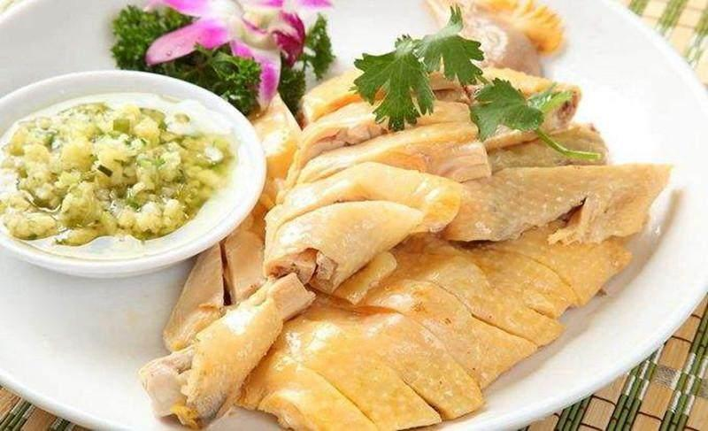
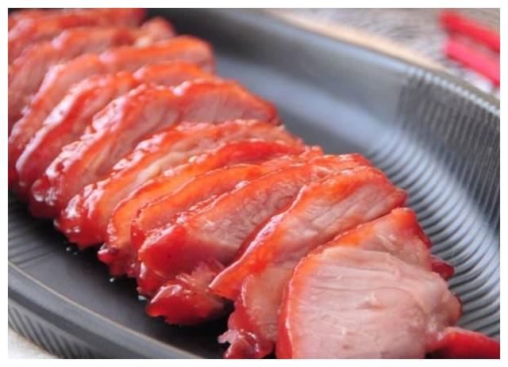
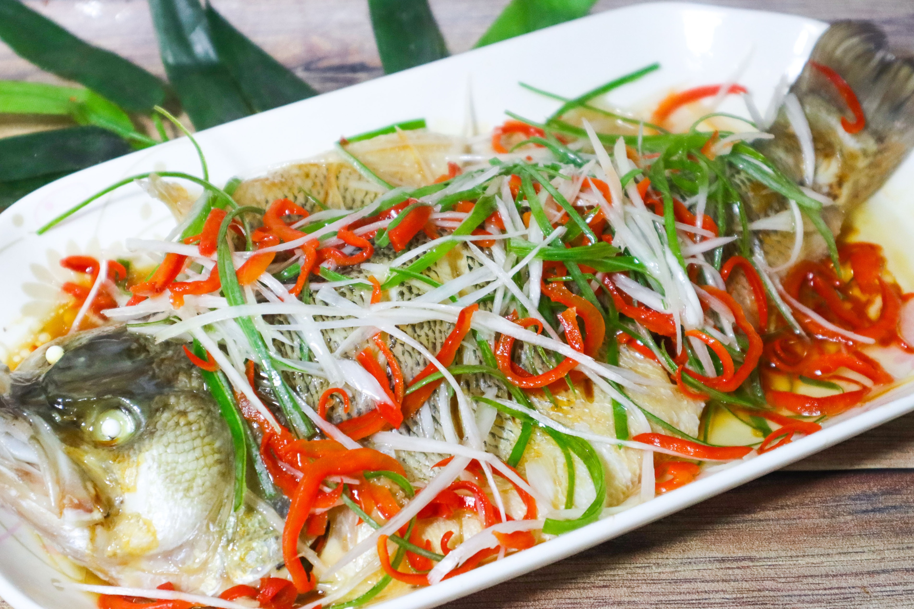

粤菜
菜系简介
粤菜是中国八大菜系之一，源自广东地区，以清淡鲜美、原汁原味著称。粤菜讲究"清而不淡，鲜而不俗"，擅长蒸、炒、炖、焖等烹饪方法，注重食材的新鲜和原味。粤菜中的点心、烧腊等也广受欢迎。
代表菜品

白切鸡
简介
白切鸡是粤菜经典名菜，选用三黄鸡，采用"浸煮"的烹饪方法，最大程度保留鸡肉的原汁原味，皮爽肉滑，清淡鲜美。
主要食材
- 三黄鸡 1只
- 姜、葱、香菜
- 沙姜、生抽
- 花生油、盐
做法步骤
- 整鸡处理干净
- 水烧开后关火，浸鸡约20分钟
- 捞出后冰水浸泡使皮更爽脆
- 斩件摆盘，配姜葱蘸料

叉烧
简介
叉烧是粤式烧腊的代表作，选用猪梅花肉，用特制酱料腌制后烤制，色泽红亮，甜咸适中，肉质鲜嫩多汁。
主要食材
- 猪梅花肉 500克
- 叉烧酱、蜂蜜
- 生抽、老抽
- 玫瑰露酒、五香粉
做法步骤
- 猪肉切长条，腌制过夜
- 烤箱预热，烤制20分钟
- 刷蜂蜜水，再烤10分钟
- 切片装盘

清蒸鲈鱼
简介
清蒸鲈鱼是粤菜中的经典海鲜菜品，讲究火候控制，鱼肉鲜嫩，原汁原味，充分体现了粤菜"清、鲜、嫩、滑"的特点。
主要食材
- 新鲜鲈鱼 1条
- 姜丝、葱丝
- 生抽、料酒
- 香菜、食用油
做法步骤
- 鱼处理干净，两面划刀
- 鱼身抹盐，放姜片腌制
- 水开后蒸8-10分钟
- 淋热油和生抽，撒葱丝